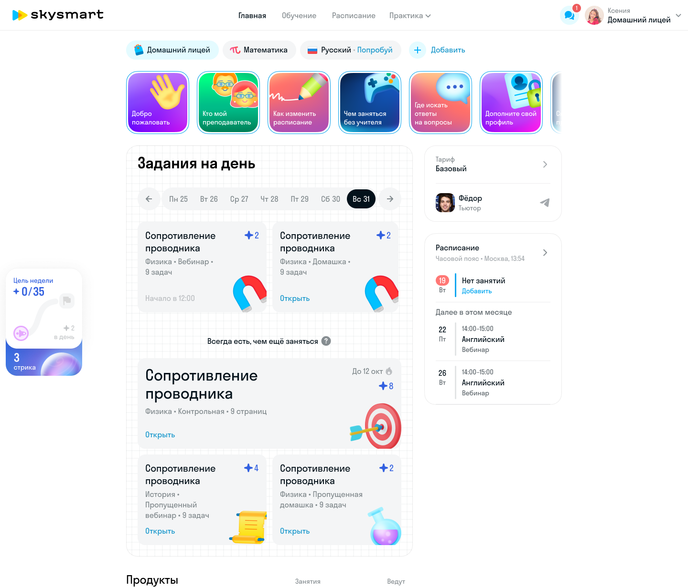
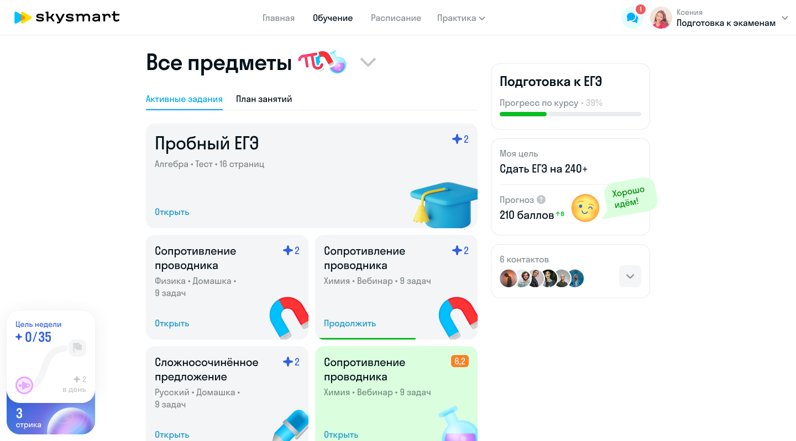

Контекст
Skysmart — детский продукт Skyeng, крупнейшей онлайн-школы в России. Английский, математика, русский язык, подготовка к ЕГЭ. Три формата обучения: индивидуальные занятия с преподавателем (F2F), групповые сессии (F2G) и самостоятельные тренажёры.
Ученики — от 4 до 18 лет. У младших — крупные элементы, маскоты, игровые механики. У старших — серьёзный тон, сложная навигация, подготовка к экзаменам. Один продукт, но совершенно разный опыт для каждого возраста.
Ключевая проблема: дети учатся онлайн, и им нужна мотивация. Преподаватели начинают урок без контекста — не знают целей ученика, его уровня и сложностей. Прогресс нигде не визуализируется, цели из заявки не попадают в продукт.
Моя роль
Продуктовый дизайнер в команде Learning Experience. Четыре параллельных направления:
- Личный кабинет ученика — дашборд, расписание, задания, навигация по предметам
- Целеполагание — диагностика уровня, анкетирование, синхронизация целей между учеником и преподавателем
- Прогресс — система «здоровья», метрики обучения, ачивки, квесты
- 3D-карта курса — визуализация учебного пути с бейджами уровней
Более 20 файлов в Figma. Каждая фича — десктоп и мобильная версия. Каждая фича — через стадии: черновик, WIP, разработка, продакшн, архив. UX-исследования встроены в процесс: прототипы тестировал на реальных учениках и преподавателях.
Личный кабинет
Главная страница после входа. Задания на день, расписание, ближайший урок, переключение между предметами. Круглые иконки предметов, каждая со своей 3D-иллюстрацией.
Три версии кабинета под разные модели обучения. В F2F — расписание и контакт с преподавателем в фокусе. В F2G — расписание сессий и обратная связь от группы. В Skysmart — задания, тренажёры, прогресс по курсу.
Отдельно: комплектации подписок, to-do списки, вкладки пробников ЕГЭ, виджет контактов, расписание вебинаров, сториз с промо-контентом. Каждый элемент — десктоп и мобильная версия.


Итерации
Кабинет прошёл через несколько версий. Менялось всё: структура навигации (хронология, сценарий, таксономия), способ отображения прогресса (процент, категории, хронология), компоновка карточек уроков.
Каждая версия отвечала на конкретный вопрос. Хронология — понятна ли ученику последовательность? Сценарий — видит ли он, что делать сегодня? Категории — находит ли нужный раздел? Финальная версия собрала лучшее из каждого подхода.


Целеполагание
Система, которая связывает мотивацию ученика с контентом курса. До неё: цель из заявки на лендинге не попадала в продукт, преподаватель не знал, зачем ученик учится, в автоматизированных сценариях контекст терялся полностью.
CJM с чёткой метрикой: DOD — 80% учеников заполняют цели. Два входа в воронку: через демо-урок с методистом или сразу после оплаты. Путь: личный кабинет → анкета → профиль → скрининг в виде нулевой домашки → первый урок.
Анкета из восьми полей: цель, дедлайн, текущая позиция, мотивация, желаемый уровень, самое сложное в предмете, как занимается сейчас, интересы. Результаты скрининга подтягиваются в анкету. Если ученик правит цели на первом уроке — данные обновляются автоматически.

Первый урок
Aloha 3.0 — отдельный дизайн-проект внутри целеполагания. Needs-анализ: шесть вопросов (цель и подцель, желаемый уровень, сроки, где я по отношению к цели, сложности, интересы) превращаются в план на первом уроке.
Преподаватель видит ответы ученика до начала урока и строит занятие вокруг его целей. Если ученик не заполнил анкету в кабинете — получает пуш в Telegram, SMS со ссылкой и прямо в чате может всё заполнить.
Диагностика адаптируется под предмет. Для детского английского — игровые вопросы с иллюстрациями. Для математики — задачи на определение уровня. Для взрослого английского — самооценка с выбором из 40+ целей (путешествия, работа, экзамены, хобби) и 50+ интересов.

Прогресс и геймификация
Не просто «прошёл 5 уроков из 20». Система «здоровья» — комплексная оценка по пяти навыкам: чтение, аудирование, грамматика, говорение, письмо. Каждый навык — с процентом и динамикой. Преподаватель видит ту же картину со своей стороны и получает рекомендации по контенту.
Для детей — квесты с таймерами и наградами. «Решить 2 карточки по математике» — выполнено, получай звёзды. Звёзды копятся на награды: распечатки с головоломками, раскраски, дипломы, доступ к играм. Геймификация исследована через конкурентов: Duolingo (ударный режим, лиги), LinguaLeo (сытость льва, фрикадельки), Busuu (очки опыта), Foxford (XP, достижения с уровнями I–V).
Виджет цели в кабинете проходит через состояния: цель не указана, анкета частично заполнена, цель выбрана, новые активности на карте курса. Каждое состояние — отдельный дизайн с CTA и обратной связью.
3D-мир
Skysmart — не просто учебная платформа, а целый мир для детей. Три 3D-маскота сопровождают учеников через интерфейс. У каждого свой характер и набор поз для разных состояний: успех, ошибка, ожидание, поздравление.
Карта курса визуализирует учебный путь через систему 3D-бейджей. Уровни от A1 до C2 — каждый со своим визуальным стилем. Стартовые — простые оранжевые гексагоны. Средние — с крыльями. Высшие — золотые с короной. Заблокированные — серые, как ориентир и мотивация.


Визуальная система
Набор 3D-объектов для наград и эмоциональных состояний: книга, колба, камера, планета, очки, торт с академической шапочкой. Каждый объект отрендерен в едином стиле и используется в карточках достижений.
Отдельный стикерпак по мотивам «Алисы в Стране чудес» — для вовлечения в процесс обучения. Волшебное зеркало, карманные часы, волшебный гриб, торт Безумного Шляпника. Стикеры появляются как награды за выполнение квестов.